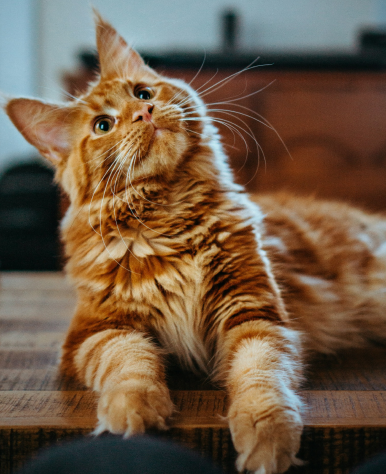

The Joys of Cat Adoption: A Guide to Bringing Home Your New Furry Friend
Adopting a cat can be a life-changing experience, offering companionship, joy, and a sense of purpose. If you're considering welcoming a feline friend into your home, here's everything you need to know about the process and benefits of cat adoption.
Table of Contents
- Why Adopt a Cat?
- Steps to Adopt a Cat
- Cost-Effective and Ready for Home
- Supporting Ethical Practices
- Final Thoughts
Why Adopt a Cat?
Saving Lives
By adopting from a shelter, you save a life. Shelters are often overcrowded, and adoption helps reduce the number of homeless cats. Check out the ASPCA for more information on how adoption saves lives.
Unconditional Love and Companionship
Cats may have a reputation for being independent, but they form deep bonds with their human companions. Learn about the emotional benefits of cat ownership from The Humane Society.
Health Benefits
Owning a cat can reduce stress, lower blood pressure, and improve overall mental health. Read more about the health benefits in this article from Mayo Clinic.
Steps to Adopt a Cat
Research
Understand the responsibilities of cat ownership and ensure it fits your lifestyle. The Petfinder Adoption Guide is a great resource.
Visit Shelters
Spend time at local shelters to meet various cats. Sometimes, the right cat will choose you! Use the Shelter Pet Project to find shelters near you.
Prepare Your Home
Create a safe and welcoming environment for your new pet. The American Humane Society offers tips on preparing your home for a new cat.
Patience
Give your new cat time to adjust to its new surroundings. Building trust takes time, but it's worth the effort. Read this guide from Best Friends Animal Society for more advice.
Cost-Effective and Ready for Home
Adoption fees usually include vaccinations, spaying or neutering, and a health check-up, making it a cost-effective choice. Most shelter cats are already socialized and litter-trained, which can make the transition smoother. For more details on adoption costs and what to expect, visit the Petco Foundation.
Supporting Ethical Practices
By adopting, you take a stand against unethical breeding practices and pet overpopulation. Your adoption fee helps support shelters and rescue organizations that work tirelessly to ensure animals are treated with care and respect. Learn more about ethical pet adoption from PETA and Animal Welfare Institute.
Final Thoughts
Adopting a cat is a wonderful way to add joy and love to your life while making a positive impact on the world. So, if you're considering bringing a pet into your home, why not visit your local shelter and see if there's a purr-fect companion waiting for you?